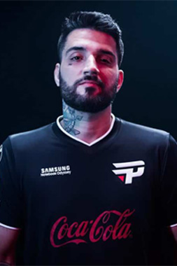

O maior jogador de League Of Legens do Brasil!
Felipe Gonçalves da Rocha, mais conhecido como brTT, é um ex-jogador profissional de League of Legends, empresário e influenciador digital brasileiro. Reconhecido como um dos maiores nomes do cenário brasileiro de eSports, brTT construiu uma carreira marcada por conquistas expressivas e uma forte conexão com a comunidade gamer. Também possui sua própria marca de roupas, a Rexpeita, além de fazer parcerias com diversas outras marcas, dentre elas a Nike.
brTT se tornou um dos jogadores de League of Legends mais conhecidos do Brasil. Durante sua carreira, consagrou-se hexacampeão nacional, sendo o segundo jogador que mais conquistou títulos na história do CBLOL, inclusive conquistando mais que qualquer equipe do campeonato. Ele disputou o Campeonato Mundial de League of Legends nas temporadas de 2015 e 2019. Além do sucesso competitivo, também se destacou como um dos principais streamers do país, com quase um milhão de seguidores em sua conta no Twitter e quase oitocentos mil em seu canal do YouTube.
Em 2012, brTT iniciou sua trajetória no competitivo de League of Legends ao entrar na paiN Gaming. Logo no início, mesmo não sendo titular, participou do IEM São Paulo com um time improvisado, o Noob da Net, que surpreendeu ao eliminar a própria paiN e vencer o torneio.
Após assumir a posição de titular na paiN em abril de 2012, destacou-se em competições online, como o bicampeonato do Go4LoL, e ajudou a equipe a se classificar para o primeiro Campeonato Brasileiro de League of Legends (CBLoL). Apesar de bons resultados online, os resultados presenciais foram mais modestos naquele ano.
Em 2013, participou de edições nacionais e internacionais do Intel Extreme Masters, com destaque para a classificação da paiN à etapa mundial do IEM em Hanôver. O ano culminou com o título do CBLoL de 2013, consolidando brTT como o melhor atirador do país na época.
A vitória levou à criação da primeira gaming house do Brasil, fazendo com que brTT se mudasse para São Paulo. A equipe disputou o qualificatório para o Mundial, ficando próxima da classificação, e foi vice em outras competições importantes, como o Desafio Internacional na Brasil Game Show.
Apesar da crescente popularidade da paiN, premiada como "Team Razer 2013", brTT deixou a organização no início de 2014, insatisfeito com os resultados internacionais e buscando evolução em sua carreira.
Em fevereiro de 2014, brTT se juntou à recém-renomeada Keyd Stars, em uma fase marcada por investimentos ousados. A organização contratou, pela primeira vez no Brasil, dois jogadores sul-coreanos: Winged (caçador) e SuNo (meio), reforçando o elenco para a temporada.
O impacto foi imediato: no primeiro semestre, a Keyd dominou o cenário nacional, vencendo quatro campeonatos seguidos — entre eles, a Liga Brasileira – Série dos Campeões, onde superaram a paiN Gaming por 3 a 2 na final. O título garantiu vaga na Final Regional Brasileira, que definiria quem disputaria o qualificatório internacional para o Mundial.
Apesar de ser favorita, a Keyd foi eliminada na semifinal pela KaBuM!, que conquistaria a vaga inédita para o Campeonato Mundial de League of Legends. Após a eliminação, os sul-coreanos deixaram a equipe e foram substituídos por Takeshi e Revolta, vindos da CNB.
Mesmo com mudanças no elenco, os títulos continuaram: a Keyd venceu torneios como a XTreme League of Legends, a Brazil Gaming League e a Arena Go4Gold. No entanto, no segundo semestre, a paiN Gaming retomou o protagonismo no cenário.
Com a saída temporária de Revolta no fim do ano, brTT chegou a atuar como caçador, trocando de função com o substituto rafes, mas a mudança não rendeu bons resultados. Ele retornou à função de atirador e ajudou na vitória da Arena Go4Gold.
Descontente com a organização, brTT deixou a Keyd apenas quatro dias após esse último título. Pouco depois, com a saída de jogadores estrangeiros da paiN por questões de visto, a equipe decidiu negociar o retorno de seu ex-atirador.
Em 2015, brTT retornou à paiN Gaming com grande repercussão, celebrada com um vídeo promocional e uma live que reuniu mais de 50 mil espectadores. A volta foi marcada pela reformulação do elenco, incluindo a contratação do suporte francês Dioud, escolhido com influência direta de brTT, e do técnico Gabriel "MiT" Souza, antigo parceiro de rota e mentor do atirador.
Com o novo formato do CBLoL, dividido em dois splits, a paiN terminou o primeiro split em quarto lugar na fase de grupos, mas caiu para a INTZ nas semifinais. No segundo split, a equipe trouxe Mylon para o topo e reforçou sua preparação com apoio psicológico. O resultado foi uma campanha dominante nos playoffs, com vitórias sem perder jogos até a final, onde derrotaram a INTZ por 3 a 0 no Allianz Parque, conquistando o título e a vaga para o qualificatório do Mundial.
No International Wildcard Qualifier, realizado no Chile, a paiN foi impecável. Venceu todos os jogos da fase de grupos e a final por 3 a 0, garantindo vaga no Campeonato Mundial de League of Legends, disputado na Europa.
No Mundial, caiu no grupo de grandes potências: KOO Tigers (Coreia do Sul), Flash Wolves (Taiwan) e Counter Logic Gaming (América do Norte). Após derrotas para KOO e CLG, a paiN venceu a Flash Wolves com uma atuação decisiva de brTT, que brilhou com um triple kill em uma luta decisiva no Barão.
No segundo turno, a paiN perdeu novamente para os Tigers e, em uma partida equilibrada, também caiu para a Flash Wolves, sendo eliminada. Mas ainda havia o jogo contra a CLG. Em clima de provocação, o atirador Doublelift tentou desafiar brTT ao mostrar o campeão Draven, ícone de brTT, mas recuou e escolheu Vayne. brTT, por sua vez, trouxe Draven, mesmo fora do meta competitivo, e liderou sua equipe à vitória com uma performance marcante — 5 abates, 7 assistências e apenas uma morte. A paiN fechou o Mundial com duas vitórias, realizando a melhor campanha de uma equipe da região wildcard até aquele momento.
Após o torneio, brTT protagonizou outro momento marcante: pediu sua namorada Giuliana “Caju” em casamento ao vivo, sendo aceito, encerrando sua participação com emoção dentro e fora do jogo.
No fim do ano, foi o atirador mais votado para o CBLoL All-Star e o International Wildcard All-Star (IWCA). No IWCA, venceu uma partida no torneio 1x1 antes de ser eliminado, e na fase em equipe (5x5), o Brasil terminou em terceiro lugar, sem classificação para a final.
O ano de 2016 começou turbulento para brTT e a paiN Gaming. Após o fim do contrato do suporte Dioud, a equipe optou por não renová-lo. As tentativas de substituição foram frustradas: o finlandês H1iva recusou vir ao Brasil e o veterano Loop foi punido por aliciamento, ficando impedido de atuar em 2016. Sem opções, a paiN escalou o streamer Matheus "Picoca" Tavares, inexperiente no competitivo, para dividir a rota inferior com brTT no primeiro split do CBLoL.
Apesar das dificuldades e da perda de dois pontos por escalação irregular, a paiN se classificou para os playoffs com campanha de 2 vitórias, 4 empates e apenas uma derrota. Durante o split, brTT chegou até a jogar como top laner por uma série, em substituição a Mylon, suspenso por um gesto obsceno — justamente a série em que veio a única derrota, contra a Operation Kino.
Nos playoffs, a paiN foi eliminada nas quartas de final pela KaBuM por 2 a 0, marcando a primeira vez que brTT ficou fora das semifinais do CBLoL. A equipe ainda disputou o 5º lugar contra a Red Canids e perdeu por 2 a 1, ficando em 6º lugar e sendo obrigada a jogar a Série de Promoção para evitar o rebaixamento. Na disputa, venceu tranquilamente a Overload, garantindo permanência na elite.
Entre os splits, brTT saiu da gaming house para morar com sua noiva, Caju, permanecendo apenas durante os treinos. A decisão, segundo ele, afetou sua relação com os companheiros de equipe.
Para o segundo split, a paiN contratou o suporte Pedro "ziriguidun" Vilarinho e promoveu Rodrigo "TaeYeon" Panisa, originalmente mid laner, como novo atirador titular. Com isso, brTT foi para a reserva e não voltou a atuar pelo time durante o restante do ano.
brTT demonstrou insatisfação com a decisão: afirmou em entrevista que "nunca é bom ser jogado para a reserva", e em publicação no Facebook disse que estava resolvendo assuntos pessoais e que a comissão técnica julgou que sua dedicação ao time não estava em 100%. O técnico MiT e o mid Kami apoiaram a continuidade de TaeYeon, afirmando que ele demonstrava mais vontade e comprometimento.
Além disso, brTT relatou que seus colegas se afastaram após sua saída da gaming house, e que não houve diálogo entre ele e o time durante partidas. O distanciamento foi evidente.
Em 4 de novembro de 2016, ao término de seu contrato com a paiN, brTT optou por não renová-lo, encerrando mais uma passagem pela organização e ficando livre para negociar com outras equipes.
Após sair da paiN, brTT foi contratado pela RED Canids no início de 2017, assumindo a titularidade no lugar de Sacy. O time reunia nomes de peso, como o suporte Dioud, o técnico Gevous, o mid laner Tockers e outros talentos como Robo e Nappon, sendo até apelidado de "time dos sonhos", embora brTT rejeitasse o rótulo.
A RED teve um começo dominante no 1º split do CBLoL, ficando invicta nas cinco primeiras rodadas. Mesmo com derrota na última rodada, classificou-se em 2º lugar. Na semifinal, venceu a paiN por 3–1 com destaque para YoDa, substituto de Tockers. Na final, após vencer o 1º jogo com brTT e um quadra kill de Kog’Maw, foi substituído por Sacy, que atuou no restante da série — vitória por 3–0 e título inédito para a RED.
O título garantiu vaga no MSI (Mid-Season Invitational), mas a equipe teve baixas: Gevous deixou o time, YoDa foi suspenso por tweets racistas e Sacy não pôde ser inscrito. No grupo da fase de entrada, a RED não conseguiu se classificar, com derrotas decisivas, mas se despediu com vitória simbólica sobre a SuperMassive, em jogo marcado por grande atuação de brTT com seu Twitch — campeão homenageado em sua tatuagem e com uma fala inspirada nele.
A conquista do CBLoL também classificou a RED para o Rift Rivals, novo torneio internacional entre regiões latino-americanas. No segundo split, brTT voltou como titular, mas passou a revezar com Sacy. O time chegou à pausa do Rift Rivals em 4º lugar, e, mesmo desfalcado, ajudou o Brasil a chegar à final do torneio. Na decisão contra a Isurus Gaming, a RED venceu com destaque para a Kalista de brTT, garantindo o título do Rift Rivals para o Brasil.
Em dezembro de 2017, brTT foi anunciado como o atirador do Flamengo Esports, recém-criado para disputar o Circuito Desafiante de 2018. No elenco, reencontrou MiT e SirT, ex-companheiros da paiN Gaming. O time gerou grande expectativa pela experiência dos jogadores.
Durante o Circuito Desafiante, o Flamengo ficou em segundo lugar na fase de pontos e chegou à final após vencer a T Show. No entanto, foi surpreendido pela IDM Gaming, que venceu a final por 3 a 1, adiando a subida direta ao CBLOL. Apesar disso, brTT assumiu a responsabilidade pelas críticas, mas destacou a chance de ainda conquistar a vaga na Série de Promoção.
Na Série de Promoção, o Flamengo enfrentou a Team One. Após abrir 2 a 0, sofreu o empate, mas garantiu a vitória no jogo decisivo, com brTT sendo o destaque e conduzindo o time à classificação para o CBLOL.
brTT desabafou após a vitória, revelando dúvidas sobre sua carreira diante das críticas. Afirmou que aceitou o desafio de disputar o Circuito Desafiante com o objetivo de levar o Flamengo à elite — objetivo que foi cumprido.
Já no CBLOL, brTT atingiu a marca de mil abates no campeonato, sendo destaque da equipe. Após perder duas finais com o Flamengo, conquistou o título do CBLOL em 7 de setembro de 2019, ao vencer a INTZ, tornando-se o primeiro pentacampeão do torneio e o único brasileiro a disputar o Mundial de League of Legends duas vezes.
Após três anos e passagens por RED Canids e Flamengo, brTT retornou à paiN Gaming em 2020, onde havia sido campeão em 2013 e 2015, reacendendo a parceria com Kami. O retorno foi motivado por um desejo de reencontrar paz no passado e voltar às origens.
A expectativa era alta com a chegada dos coreanos Key e SeongHwan, além de nomes consagrados como Tinowns e Yang, mas a equipe não conseguiu se classificar para os playoffs do primeiro split do CBLOL 2020. Para o segundo split, o elenco foi reformulado com Robo, esA (ex-companheiro de Flamengo) e CarioK, considerado uma promessa na selva.
A equipe renasceu no segundo split, liderando a fase de pontos e chegando à final após bater a Prodigy Esports numa semifinal emocionante. Na grande final contra a INTZ, acabaram derrotados por 3 a 1, reacendendo dúvidas sobre a possível aposentadoria de brTT. Ele negou os rumores e renovou com a paiN, reafirmando seu compromisso com a torcida.
Com a chegada do sistema de franquias no CBLOL 2021, a paiN manteve a base e contratou o suporte Luci, ex-companheiro campeão no Flamengo, além do técnico turco Nova. Após um início de campeonato inconsistente, a equipe se recuperou e se classificou para os playoffs.
Nos playoffs, a paiN fez história ao aplicar o primeiro "reverse sweep" da competição contra a LOUD, vencendo por 3 a 2 após estar perdendo por 2 a 0. Depois, eliminaram o Flamengo em mais uma série emocionante e chegaram à sexta final da organização — a nona da carreira de brTT.
Em 18 de abril de 2021, brTT conquistou seu sexto título de CBLOL, o terceiro com a paiN, tornando-se o maior campeão da história do campeonato e ultrapassando até a INTZ em número de títulos. Com o título, a paiN se classificou para o MSI 2021 na Islândia.
No MSI, a paiN foi alocada no grupo B com MAD Lions (Europa), PSG Talon (Taiwan) e Istanbul Wildcats (Turquia). A equipe teve uma estreia vitoriosa, mas acabou sendo eliminada após derrotas decisivas, especialmente contra a MAD Lions, em uma partida que teve o Nexus inimigo exposto. A campanha terminou com a terceira colocação no grupo, com uma vitória na despedida contra os turcos.
brTT foi muito criticado pela performance abaixo da média no torneio e desabafou nas redes sociais, classificando sua participação como "a pior da carreira em competições internacionais". Ele permaneceu inativo em 2022 e deixou oficialmente a organização em 2023, encerrando sua terceira passagem pela paiN Gaming.
Após seu desligamento da paiN Gaming, brTT foi anunciado em 6 de abril de 2023 como embaixador de League of Legends da organização Fluxo, marcando seu retorno ao cenário, mas desta vez fora das competições. Sua passagem, no entanto, foi breve — ele deixou a organização em menos de um ano.
Em maio de 2024, começaram a circular rumores sobre seu retorno ao competitivo, divulgados pelo jornalista Luís "Showtana" Santana. Os vazamentos apontavam que brTT estava motivado a competir novamente, chegando até a cogitar uma mudança de posição para suporte, e participando de tryouts em organizações como FURIA e Los Grandes.
Pouco depois, Showtana confirmou que brTT estava próximo de ser anunciado como o novo atirador da Los Grandes. A confirmação oficial veio no dia 17 de maio de 2024, quando a Riot Games divulgou as escalações oficiais do CBLOL, marcando o retorno oficial de brTT ao competitivo pela equipe Los Grandes, vestindo novamente a camisa de um time da elite do LoL brasileiro.
Campeão do Riot Season 3 Brazilian Championship (Posteriormente conhecido como CBLOL) pela equipe paiN Gaming (PNG)
Campeão do CBLOL (Campeonato Brasileiro de League of Legends) pela equipe Keyd Stars (KST), atual Vivo Keyd Stars (VKS)
Campeão do CBLOL (Campeonato Brasileiro de League of Legends) pela equipe paiN Gaming (PNG)
Campeão do CBLOL (Campeonato Brasileiro de League of Legends) pela equipe RED Canids (RED)
Campeão do CBLOL (Campeonato Brasileiro de League of Legends) pela equipe Flamengo Esports (FLA)
Campeão do CBLOL (Campeonato Brasileiro de League of Legends) pela equipe paiN Gaming (PNG)